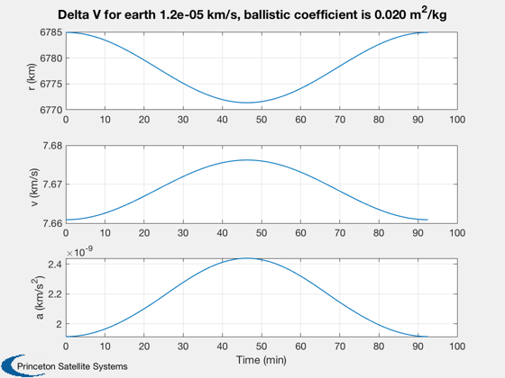

Design a propulsion system for a low-earth orbit satellite
We assume a constant orbit for drag purposes. You can add any number of Hohmann transfers and any number of phase changes. You can add other maneuvers to this script.
We assume a blowdown system with helium as the pressurant. The momentum calculations assume a fixed center-of-mass offset. If one thruster overwhelms the RWA capacity it recommends a 4 thruster configuration. In that case you use off-pulsing during maneuvers.
See also OrbMnvrHohmann, OrbMnvrPhaseChange, DVOrbitDrag, RocketMass, BDDesign, Period, Constant, CreateLatexTable, DisplayLatexTable
Contents
%-------------------------------------------------------------------------- % Copyright (c) 2017 Princeton Satellite Systems, Inc. % All rights reserved. %-------------------------------------------------------------------------- % Since version 2017.1 %--------------------------------------------------------------------------
Constants
year = 86400*365.25; degToRad = pi/180; rE = Constant('equatorial radius earth'); g = 9.806; u = 0.1; % unit of cubesat - 10 cm == 0.1 m kmToM = 1000; mToCm = 100; psiToP = 6895;
User inputs
% Orbit h = 400; % Altitude (km) e = 0.001; % Eccentricity inc = 28.6; % Inclination (deg) lifetime = 1; % Years % Spacecraft massPay = 5; % Mass payload (kg) massFuel = 2; % Guess (kg) cD = 2; % Drag cofficient worst case area = 3*2; % Biggest face of 6U Cubesat (u) dTDrag = 0.25*year; % Time between drag makeup maneuvers (sec) momRWA = 0.1; % Momentum storage of RWAs allocate to stationkeeping (Nms) cMOffset = 0.1*u; % Center of mass offset fTank = 0.05; % Structural fraction tanks % Maneuvers - Phase changes deltaA = [pi/32 pi/64]; % Angle of phase change (rad) kTarget = [2 2]; % Number of orbits to accomplish the phase change % Maneuvers - Hohmann transfers dAHoh = [10 2 3 34]; % Altitude changes for Hohmann transfers (km) % Thruster parameters rhoFuel = 1000; % Fuel density (kg/m^3); minPw = 0.01; % Minimum pulsewidth (sec) thrust = 0.01; % Thrust (N) iSp = 200; % Specific impulse (sec) tFuel = 300; % Nominal tank temperature (deg-K) pInitial = 350*psiToP; % Initial tank pressure pFinal = 100*psiToP; % Final tank pressure (P)
Compute the Delta-V Budget
massDry = massPay + fTank*massFuel; sMA = rE + h; nPer = lifetime*year/Period(sMA); el = [sMA inc*degToRad 0 0 e 0]; % ballistic coefficient: m^2/kg, use average mass b = cD*area*u^2/(massDry+0.5*massFuel); % Drag - call DVOrbitDrag twice to get a plot DVOrbitDrag( el, [-pi,pi], b ); dVDrag = DVOrbitDrag( el, [-pi,pi], b )*nPer; dVDragPM = dVDrag/(lifetime*year)/dTDrag; % Phase changes deltaVPC = zeros(1,length(deltaA)); for k = 1:length(deltaA) deltaVPC(k) = OrbMnvrPhaseChange( sMA, deltaA(k), kTarget(k) ); end dVPhase = sum(deltaVPC); % Hohmann Transfers dVHohmann = 0; dVHohmannMax = 0; for k = 1:length(dAHoh) deltaVH = OrbMnvrHohmann( sMA, sMA + dAHoh(k) ); dVHohmann = dVHohmann + deltaVH.total; dVHohmannMax = max([dVHohmannMax deltaVH.a deltaVH.b]); end dVTotal = dVDrag + dVPhase + dVHohmann; massFuel = RocketMass( iSp, massDry, fTank, dVTotal ); rTank = (massFuel/rhoFuel/(4*pi/3))^(1/3); [~, massP] = BDDesign( massFuel, rhoFuel, tFuel, pInitial, pFinal ); % Find the torque torque = thrust*cMOffset; mass = massPay + (1+fTank)*massFuel; accel = thrust/mass; dTMax = max([dVDragPM deltaVPC])*kmToM/accel; deltaMom = torque*dTMax; nThrusters = 1; if( deltaMom > momRWA ) fprintf(1,'Warning: The change in momentum during a maneuver exceeds the RWA capability.\nWe need to do ACS with thrusters\n'); nThrusters = 4; end
Warning: The change in momentum during a maneuver exceeds the RWA capability. We need to do ACS with thrusters
Format output
Create a latex table. Latex is a word processing language that produces nice technical documentation. CreateLatexTable creates a latex file with this table that can be imported into Latex documents.
k = 1;
s = cell(1,2);
s{k,1} = 'Mass'; s{k,2} = sprintf('%12.2f (kg)',mass); k = k + 1;
s{k,1} = 'Mass dry'; s{k,2} = sprintf('%12.2f (kg)',massDry); k = k + 1;
s{k,1} = 'Mass fuel'; s{k,2} = sprintf('%12.2f (kg)',massFuel); k = k + 1;
s{k,1} = 'Mass pressurant'; s{k,2} = sprintf('%12.2e (kg)',massP); k = k + 1;
s{k,1} = 'Density fuel'; s{k,2} = sprintf('%12.2f (kg/m^3)',rhoFuel); k = k + 1;
s{k,1} = 'Tank fraction'; s{k,2} = sprintf('%12.2f ',fTank); k = k + 1;
s{k,1} = 'Tank radius'; s{k,2} = sprintf('%12.2f (cm)',rTank*mToCm); k = k + 1;
s{k,1} = 'Area'; s{k,2} = sprintf('%12.1f (u^2)',area); k = k + 1;
s{k,1} = 'Momentum capacity RWA'; s{k,2} = sprintf('%12.3f (Nms)',momRWA); k = k + 1;
s{k,1} = 'Semi-major axis'; s{k,2} = sprintf('%12.1f (km)',sMA); k = k + 1;
s{k,1} = 'Minimum Pulsewidth'; s{k,2} = sprintf('%12.4f (s)',minPw); k = k + 1;
s{k,1} = 'Thrust'; s{k,2} = sprintf('%12.1e (N)',thrust/nThrusters); k = k + 1;
s{k,1} = 'I_{sp}'; s{k,2} = sprintf('%12.1f (s)',iSp); k = k + 1;
s{k,1} = 'Delta V Drag'; s{k,2} = sprintf('%12.2f (m/s)',dVDrag*1e3); k = k + 1;
s{k,1} = 'Delta V Phase Changes'; s{k,2} = sprintf('%12.2f (m/s)',dVPhase*1e3); k = k + 1;
s{k,1} = 'Delta V Hohmann Transfers'; s{k,2} = sprintf('%12.2f (m/s)',dVHohmann*1e3); k = k + 1;
s{k,1} = 'Delta V Total'; s{k,2} = sprintf('%12.2f (m/s)',dVTotal*1e3); k = k + 1;
s{k,1} = 'Number of thrusters'; s{k,2} = sprintf('%d ', nThrusters); k = k + 1;
DisplayLatexTable(s);
CreateLatexTable(s,'ThrusterDesign');
%--------------------------------------
Mass 5.44 (kg)
Mass dry 5.10 (kg)
Mass fuel 0.42 (kg)
Mass pressurant 6.54e-04 (kg)
Density fuel 1000.00 (kg/m^3)
Tank fraction 0.05
Tank radius 4.66 (cm)
Area 6.0 (u^2)
Momentum capacity RWA 0.100 (Nms)
Semi-major axis 6778.1 (km)
Minimum Pulsewidth 0.0100 (s)
Thrust 2.5e-03 (N)
I_{sp} 200.0 (s)
Delta V Drag 68.37 (m/s)
Delta V Phase Changes 59.52 (m/s)
Delta V Hohmann Transfers 27.64 (m/s)
Delta V Total 155.54 (m/s)
Number of thrusters 4